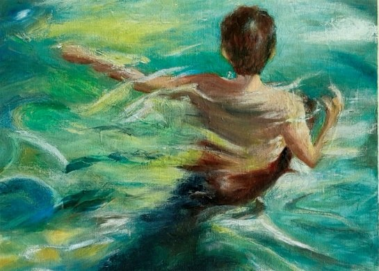
Adeline Dupont
Peinture · Le Brusc
Peintre amateur autodidacte, j'ai vécu 30 ans en Guadeloupe, puis en région PACA. Bien que native de la région parisienne, j'ai toujours vécu au bord de l'eau : en Guadeloupe pendant ma jeunesse, puis à Marseille et maintenant au Brusc.
Je peins depuis de nombreuses années, en atelier et en solo, et j'aime aussi m'exprimer dans l'argile et l'art textile. Pendant dix ans, j'ai tenu une galerie d'art rue Paradis à Marseille, dans laquelle j'ai pu rencontrer et exposer de nombreux artistes peintres, sculpteurs, photographes. Cela m'a permis …
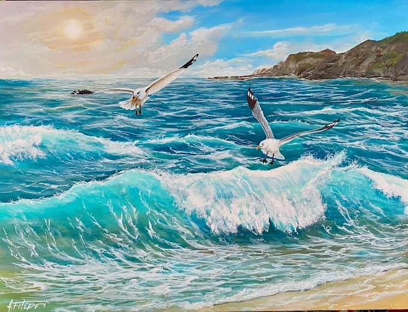
Alain Filippi
Peinture
« Le plaisir de peindre le mieux possible avant tout ! »
Passionné de peinture depuis son plus jeune âge, Alain FILIPPI s’essaye aux différentes techniques depuis 2008. Des nus artistiques monochromes à l’aérographe, il passe aux paysages de mer hyperréalistes partout où l’eau est présente, lumineuse, transparente, calme ou tempétueuse. Il réalise également portraits humains ou animaliers selon son inspiration ou sur demande. Avec plus de 300 toiles et 46 expositions à son actif, Alain FILIPPI est côté AKOUN depuis 2017 (600€) et renouvelé en 2023 (900€), il est membre de l’Institut Méditerra…
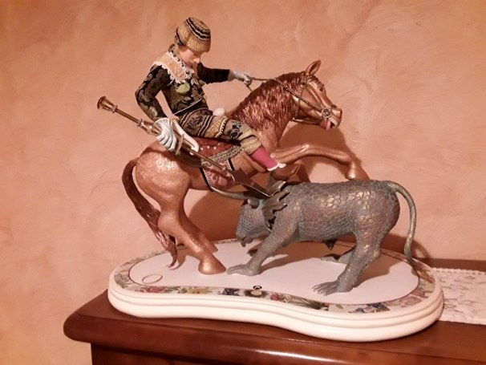
André Poissy
Sculpture
Après avoir suivi des cours de dessin, de peinture et de sculpture dans différents ateliers, mon choix s'est finalement porté sur la sculpture, pour le travail en ronde-bosse.
Mes matériaux de prédilection sont la terre, le plâtre, le marbre et la récupération de divers objets. Après quelques dessins préparatoires ou une maquette en terre, je construis ma sculpture par assemblage, à la manière d'un puzzle.
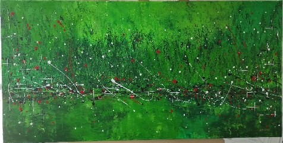
Anne-Marie Corsi
Peinture
J'ai commencé à peindre en 2013, au sein de l'association des Artistes Gardéens, dans l'atelier de l'artiste peintre M Jean-Luc FONTAINE. Il s'agissait de peinture figurative à l'huile sur toile. Puis, en 2020, le confinement engendré par l'épidémie due au COVID 19, a été une période charnière. Ne pouvant plus assister aux cours collectifs, j'ai commencé à regarder des tutoriels de peinture sur Youtube. Et j'ai découvert et aimé la peinture acrylique abstraite.
Dans un premier temps, j'ai apprécié les diverses techniques d'acrylique pouri…
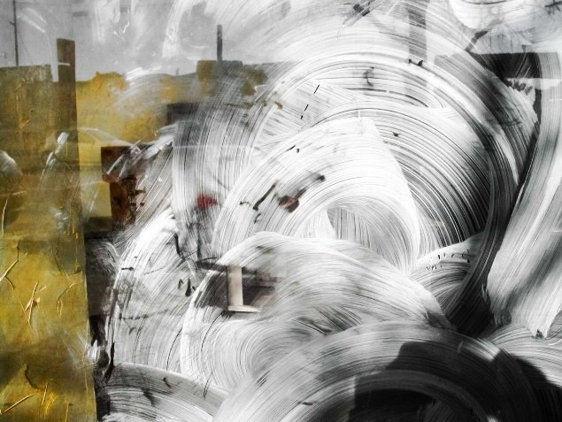
Annie Pinard
Photographie
C’est à l’automne 2008, avec l’irruption d’un appareil photographique numérique au sein de la famille que s’est déclenché en moi ce besoin d’immortaliser ces fulgurances visuelles qui m’accompagnent depuis toujours. Qui mieux que Léonard de Vinci avec cette citation peut représenter mon approche photographique : « Il ne devrait pas être difficile de vous arrêter quelquefois pour contempler, les taches d’un mur, les nuages, les cendres d’un feu, de la boue, des reflets, des ombres, vous y trouveriez des idées réellement merveilleuses »
C’est ainsi que j’explore Toulon, ses environs, ou parfois…
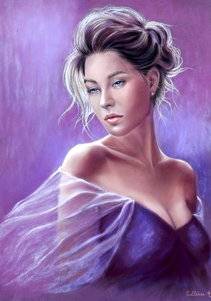
Armelle Callenes
Peinture
La femme est au cœur de mon univers pictural. À travers le pastel et l’aquarelle, j’explore sa force, sa sensibilité, son mystère et ses fragilités.
Je cherche à créer un équilibre entre rêve et réalité, sensualité et pudeur, douceur et mélancolie. Un regard, un geste ou un silence peuvent parfois raconter bien plus que les mots Mes œuvres sont avant tout des invitations à ressentir, à se laisser émouvoir et à y retrouver, peut-être, une part de soi.
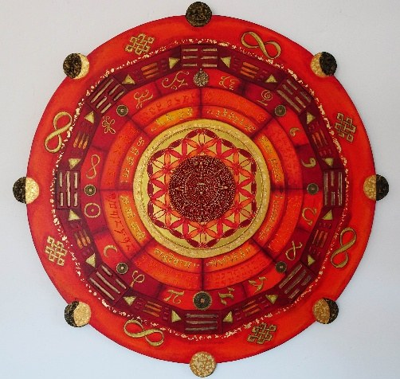
Aurélia Arzur
Peinture
« Depuis 17 ans Aurélia Arzur parcourt l'Asie à la recherche de papiers de prières, de minéraux, de bijoux anciens, d'objets en bronze… qu'elle assemble tels des témoignages picturaux des ses rencontres et de ses voyages. Dans ce monde moderne, nous avons plus que jamais besoin de façonner une pensée interculturelle et intemporelle. L’Art est un moyen privilégié pour s’éveiller et témoigner d'une vision d'un monde axée sur des pensées universelles et des sagesses. Ses œuvres véhiculent des messages d'amour et de paix. La joie ne se commande pas elle s'invite,…
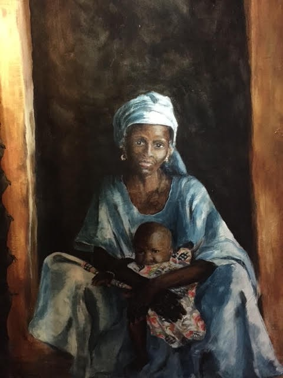
Brigitte Tournier
Peinture
Depuis toujours, je suis fascinée par la beauté du monde vivant et par l’émotion que peut susciter un regard, une émotion, ou un mouvement. La peinture est devenue naturellement mon langage. Au fil des années, de nombreuses rencontres artistiques et formations m’ont permis d’explorer de nombreuses techniques : peinture à l’huile, fresques aux pigments, techniques mixtes et gravure. Chacune d’elles a enrichi manière de percevoir la couleur, la lumière et la matière. Mon univers est essentiellement figuratif. Les animaux et les portraits occupent une place centrale dans mon travail. Ils sont pou…
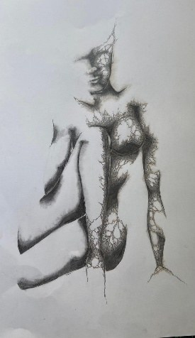
Catherine Richard
Sculpture
Le dessin et la sculpture sont des modes d'expression qui, silencieusement, révèlent une partie de moi.
Rien n'est réfléchi, pensé, tout est spontané, de la tête, des rêves, aux mains et à la matière.
C'est dans le regard de l'Autre que la magie s'opère. Car il y a ce que l'artiste a mis dans son œuvre et il y a ce que le spectateur y voit. Ce que lui décide, dans son regard, de laisser vivre. Le partage et le lien qui se forment alors, deviennent un cadeau que chacun d'entre eux fait à l'autre.
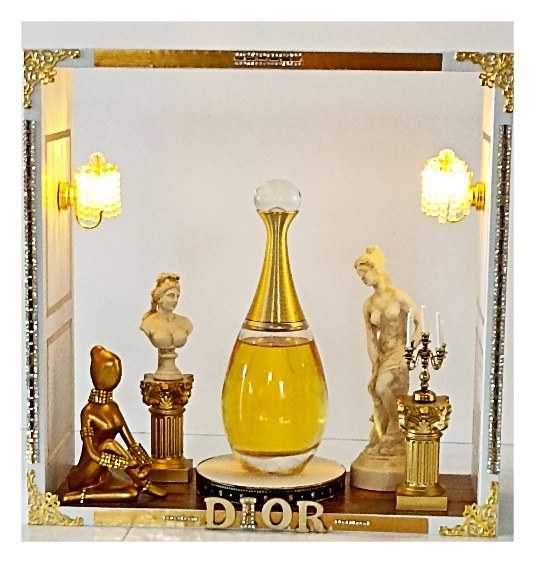
Chantal Vigan
Peinture
Artiste autodidacte, je peins depuis les années 2000 des silhouettes élégantes inspirées des top models et des Massais.
Mes oeuvres, ornées de bijoux fantaisie, ont été récompensées à plusieurs reprises.
Depuis deux ans, je crée également des scènettes intégrant des flacons de parfum de haute couture, mises en scène à l'intérieur d'un cube pour refléter l'univers de chaque flagrance.
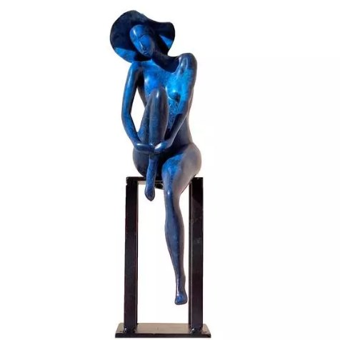
Christian Candelier
Sculpture · Sanary-sur-Mer
Sculpteur installé à Sanary sur Mer dans le Var, l’artiste Christian Candelier vous emmène dans l’univers émotionnel de ses nus féminins habités par l’élan, la grâce et l’élégance qui exaltent la beauté féminine avec une touche d’érotisme. Il puise ses inspirations dans les poses de ses modèles vivants, dans les tableaux qu’il affectionne particulièrement ainsi que dans les publicités de joaillerie, de haute couture et de parfums. C’est à chaque fois un défi de créer en 3D ce qui l’a ému en 2D. « J’aime que l’on ait plaisir à caresser mes sculptures en bronze, de finition lissée, pour ressenti…
Christine Clerc
Céramique
Je travaille exclusivement le grès depuis de nombreuses années et de façon professionnelle depuis 2021 en m’inscrivant à la Maison des Artistes. J’aime partager ma passion en participant à différentes expositions et Marchés Potiers (Vallauris, Antibes, Tourrettes-sur-Loup, Menton, Roquebrune-sur-Argens…)
J’utilise la méthode des plaques et également le modelage pour réaliser des sculptures décoratives associant lumière et végétal (les « Plantophores »
(Mot inventé), des lanternes solaires, ou des vases décoratifs). En fonction de l’effet désiré, certaines de mes créations sont traitées en Ra…
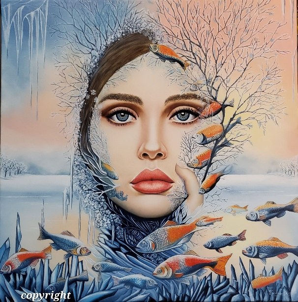
Christine Henry de Saint-Gervais
Peinture
Mes premiers souvenirs de dessins et de peinture remontent à ma plus jeune enfance. Je suis diplômée « d’Artisan d’Art » par la chambre de Métiers du Val de Marne. Guidée par la recherche et la passion, je mets en pratique mon savoir-faire pour transformer et harmoniser décors, couleurs, espaces, ambiance. Aujourd’hui je laisse le rêve l’emporter sur la réalité, Il semble que j’ai trouvé mon chemin vers le mouvement « Maxi réaliste » un décalage par rapport au temps présent, passé, ou futur entre deux mondes qui se rejoignent, créant ainsi une virtualité plausible.
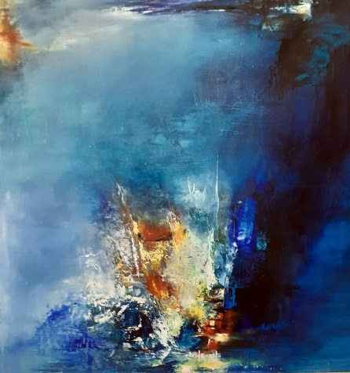
Claude Coste
Peinture
Longtemps autodidacte, car pour moi créer passait par la liberté d'expression sans contrainte aucune, j'ai décidé par la suite de m'inscrire aux Beaux-Arts de Toulon.
J'ai suivi divers ateliers, dont celui de Colette Chauvin, puis celui de Rin, artiste de renom qui appartenait au cercle très fermé de la nouvelle école française créée à Paris. Ce dernier m'a permis de retrouver la liberté d'expression qui m'était indispensable pour arriver à ma propre démarche, qui s'ouvre sur une synthèse forme, espace, lumière.
Dans chaque tableau, une inspiration dif…
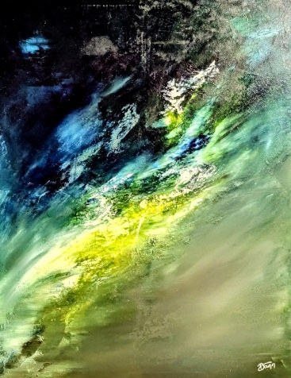
Daniel Aubert (Dann)
Peinture
Très tôt influencé par les peintres impressionnistes (Noirot en particulier), je cherche à peindre des paysages intérieurs, une invitation au rêve... Je sculpte la toile, la maltraite, la frappe ou la caresse... Parfois je suis dans le flux, sous tension. Je suggère, donne un aperçu de mes émotions. Ma palette chromatique est riche, mais ma préférence va vers le bleu de Prusse. J’aime le mouvement, la tension entre l’image et l’imaginaire, le mouvement physique et le mouvement de l’esprit. Changement de supports et de techniques... Depuis 3 ans (période « covid »), j’expérimente la peinture su…
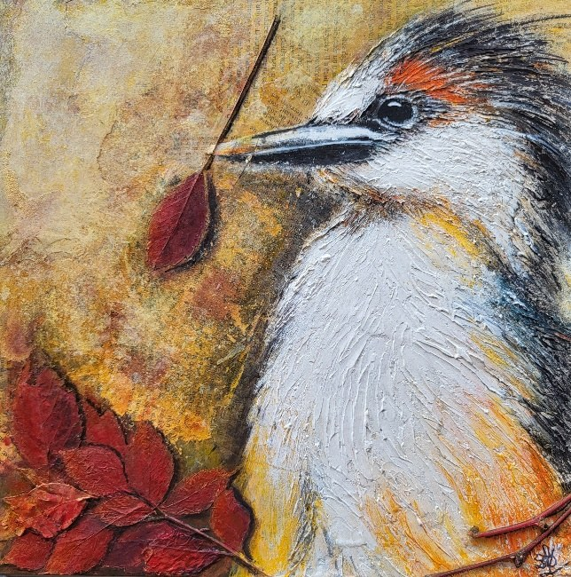
Danièle Defesche
Peinture
Artiste autodidacte, je peins pour révéler l’invisible : l’émotion dans les regards, la vibration dans les corps, la singularité dans chaque visage.
Ma peinture est figurative et traverse différents thêmes, même si les personnages, portraits et figures connues m’attirent profondement. J’aime explorer les contrastes et surtout l’expression de ce qui ne se dit pas et rencontrer les autres à travers mes toiles. Dernierement j’ai crée une serie qui se nomme « Zebrattitude », un hommage aux âmes atypiques, sensibles, parfois à contre courant, comme moi. Chaque toile est un dialogue, un moment de v…
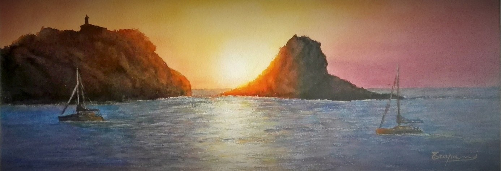
Denis Trapani
Peinture
Peintre autodidacte, je suis né en 1947 en Tunisie. En 1967. J’ai suivi pendant 3 ans les cours des Beaux Arts à Paris qui m’ont permis d’obenir un brevet professionnel de taille de pierre en restauration de monuements historiques. Parallement, je me consacre à la peinture figurative à l’huile et en 1987 je participe à ma 1 ère exposition. S’ensuivent de nombreuses expositions personnelles et régionales. Plusieurs mentions et prix m’ont été attribués, dont celui du peintre Dieudonné Jacobs en 1996 et 1998. En 2003 je découvre l’aquarelle. Faire une aquarelle, d’un paysage, d’un bouquet de fleu…
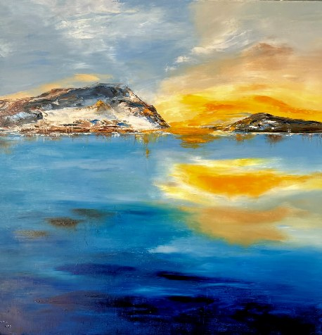
Denise Gay
Peinture
Née en Algérie, et résidant depuis de nombreuses années à Toulon, j’ai commencé mon expérience artistique dans un atelier dans lequel peignaient des amoureux de l’Art.
Conquise, je suis vite arrivée à la peinture à l’huile et aux couteaux. Et depuis, j’ai créé des scènes de rues, de Méditerranée, et des paysages de Provence. Par la suite, Je suis arrivée vers une expression plus spontanée, où l’abstraction m’autorise à transmettre toutes mes émotions avec le plaisir de la création absolue. Devenue présidente de l’association « la palette Valettoise », et vice-présidente de l’association « Ref…
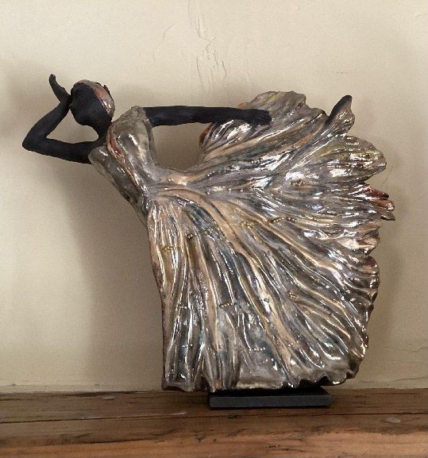
Dolorès Aime
Sculpture
Née à HYÈRES, j’ai d’abord exercé le métier de préparatrice en pharmacie avant de me consacrer pleinement à la création artistique. La terre est devenue mon moyen d’expression privilégié. A partir d’un simple bloc d’argile j’adore façonner des sculptures qui racontent une histoire qu’il s’agisse d’animaux ou de figurines. Mes femmes se déclinent dans des univers contrastés tantôt empreints de douceur et de sensualité, tantôt inspirés d’une esthétique futuriste. En parallèle de mon travail de sculpture, je crée également des bijoux, prolongeant ainsi mon goût pour les formes, les matières et le…
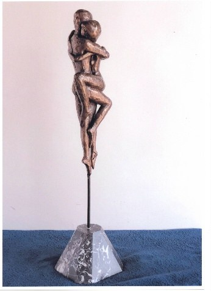
Dominique Bouchaud
Sculpture
Depuis le plus jeune âge, j’ai sculpté et déssiné avec mon père qui était diplomé des Beaux-Arts de Paris (Décédé en 1981), professseeur de dessin et de sculpture.
A partir de 2008, j’ai pris très au serieux cette occupation de sculpteur avec comme but de devenir professionnel. J’ai quitté l’Italie en 2012, pour m’établir à Montélimar afin d’être au plus prêt de la fonderie Barthelemy Art, située à Crest (Drôme), où je réalise mes bronzes.
Je suis Docteur en pharmacie (Université de Caen), diplomé du collège européen d’Osthéopathie de Genève (Suisse), ainsi que de l’Ecole des Arts et Métiers…
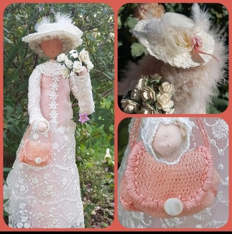
Dominique Dauzat
Couture & textile
Les DOMZELLES, élégantes demoiselles sur socle Je suis créatrice de Domzelles depuis 2007 : de chics demoiselles sur socle qui allient élégance, harmonie des couleurs et minutie des détails. Animée par l’amour du tissu, je conçois ces créations uniques 100% faites main à partir d’une variété de matériaux (laine, perles, dentelles, ...). C’est par la recherche des possibilités qu’offre le tissu que je fais naître ces singulières silhouettes et leurs accessoires (chapeau, sac, bouquet de f leurs).
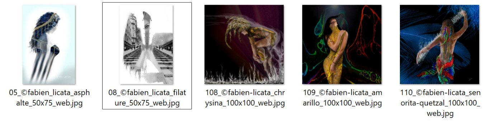
Fabien Licata
Art numérique
Né de la rencontre entre photographie et peinture numérique, le travail de Fabien Licata explore les zones de glissement entre réel et imaginaire. Sa pratique, qu’il nomme Photo-Graphisme, s’inscrit dans le champ des arts visuels hybrides : un espace où l’image photographique devient matière première d’une réinterprétation picturale entièrement manuelle. Formé à la photographie argentique et aux arts numériques, l’artiste développe un geste singulier : il peint directement dans l’image, pixel après pixel, sans filtres ni automatisation, en prélevant uniquement les couleurs présentes dans la ph…
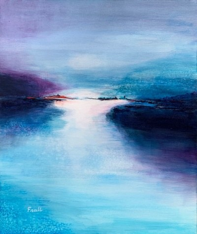
Françoise Meyer
Peinture
Depuis toujours passionnée par la création artistique, j’ai suivi une formation académique et modèle vivant au Beaux-Arts de Nice. Curieuse de nature, j’ai exploré de nombreuses techniques : aquarelles, encre, calligraphie, Peinture sur Soie, avant de me fixer sur la peinture à l’huile pendant une vingtaine d’années Actuellement, je pratique la peinture acrylique en technique, mixte, semi abstraite, inspiré de la nature, la mer, les femmes. Nombreuses expos personnelles et associatives. Chaque œuvre est une invitation à s’interroger, un voyage entre rêve et cœur ou les émotions prenne Vie dans…
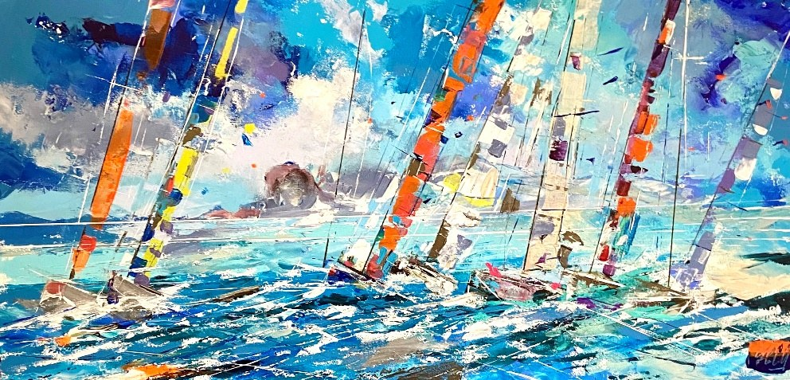
Georges Cabot
Peinture
Geca est un artiste peintre passionné, dont les œuvres reflètent une véritable connexion avec la nature et l'exploration des émotions humaines. Ses toiles, teintées de couleurs vives et de touches expressives, invitent le spectateur à plonger dans un univers pictural unique. Parcours artistique. Depuis son plus jeune âge, Geca a toujours été fasciné par l'art et le pouvoir de la peinture à exprimer ses ressentis. Ayant suivi un parcours artistique en autodidacte, il a développé un style personnel, mêlant influences abstraites et figuratives. Ses œuvres, empreintes de sensibilité, exp…
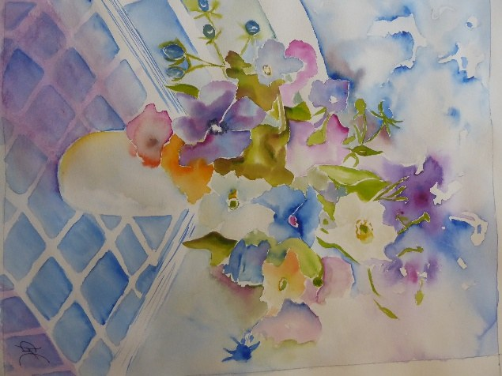
Georges Hassold
Peinture
Né le 29 avril 1945.
De 1995 à 1998 J’ai suivi les cours de l’école de dessin d’Hyères Les Palmiers. Ma préférence après l’huile et l’acrylique a été l’aquarelle. En 2000, j’ai été sollicité pour donner des cours au sein d’une association hyéroise pendant six ans. Jusqu’en 2010, j’expose dans la région notamment dans le Var, dans la Loire, et les Charentes Maritimes. En 2013, je reprends la sculpture sur bois. En 2015, je m’inscris à l’association des artistes gardéens. En 2016, je suis à nouveau sollicité pour transmettre mes connaissances en aquarelle, aux artistes gardéens et au Vieux Mas …
Gisèle Labrat
Peinture
Née à Alger, après des passages à Marseille, Lyon et Paris, où elle crée et dirige pendant 15 ans un laboratoire de photos professionnelles et une société de distribution en direct de matériels artistiques auprès des cours de dessin et de peinture, elle revient en 1995 à Toulon et fréquente les différents lieux d'études artistiques sur le plan professionnel et personnel. Elle ouvre une galerie à La Garde et perfectionne son métier de restauratrice de tableaux et de peinture.
Elle participe à de nombreuses expositions sur des thèmes variés, réalise une exposition à La Farlède sur la musiq…
Guy Vallée
Dessin
Guy Vallée, architecte à la retraite, se souvient du temps où le dessin assisté par ordinateur n'était pas encore présent dans les agences. À cette époque, pour animer et donner l'échelle des bâtiments, il était de mise de faire figurer sur les coupes et les façades de petits personnages appelés « Grouillots ».
Lors d'un voyage au Canada, pour animer ses soirées, il participa à un atelier de céramique d'où naquit sa première œuvre consacrée aux « Grouillots » : un vide-poche en céramique qui connut un triste destin et dont on peut encore voir les restes dans sa collection …
Gérard Suissia
Peinture · Solliès-Pont
Artiste-peintre installé à Solliès-Pont, Gérard Suissia construit depuis de nombreuses années une œuvre abstraite profondément ancrée dans l'exploration du geste et de la couleur. Son univers pictural, nourri par des influences telles que Van Gogh, Basquiat ou Miró, se distingue par la liberté de ses compositions et la puissance expressive de la matière.
Présent dans de nombreux salons et événements artistiques majeurs (Forum de l'Art Toulon, symposiums d'art contemporain, Salon des Arts Paris, SIAC Avignon et Marseille), il est régulièrement récompensé, notamment par la médail…
Hervé Rongemaille
Art du verre
Artisan d'art spécialisé dans le travail du verre. Issu d'une formation d'ajusteur en mécanique de précision, j'ai transposé la rigueur, la finesse et la minutie de ce métier à l'art du verre.
Autodidacte passionné depuis 1985, je maîtrise la découpe, la gravure, l'assemblage et la superposition de plaques de verre, quels qu'en soient le type, la couleur ou l'épaisseur. Mon approche allie inspiration artistique et étude préalable des projets, pour créer des œuvres à la fois esthétiques, décoratives et parfois fonctionnelles. Mes recherches artistiques, …
Hélène Icard
Peinture
Depuis 1987, Hélène Icard est une peintre, sculpteure française. Ses œuvres ont été présentées et primées dans de nombreuses expositions individuelles et collectives à l’échelle nationale.
Après un long séjour en Afrique, elle a, comme un retour aux sources, posé ses bagages et ses pinceaux en Provence depuis 2006. Son inspiration se nourrit de rencontres, d’enseignements d’artistes divers et de voyages.
Hélène Icard est une artiste qui confronte les différences, les opposés pour les voir se dissoudre dans l’œil du spectateur. Les couleurs vives et lumineuses marquées par l’Afrique et la Méd…
Isabelle Tron
Peinture
D’abord le noir et le blanc, fusain et craie, pour réapprendre les bases, je découvre ensuite la vie en couleur avec le pastel sec, puis la peinture à l’huile, pinceaux et couteaux.
Après avoir vagabondé, au gré de mes envies de découverte, dans d’autres activités artistiques, essayé d’autres matières, je suis tombée avec bonheur, il y a plus de 12 ans, dans les encres de couleur. De l’eau, de l’encre, un peu d’imagination et beaucoup de plaisir : mes monstres sont arrivés, les uns après les autres, avec un besoin de liberté dans les formes et les couleurs. Chacun d'eux raconte une histo…
Jean-Claude Cure
Mosaïque
Mon cheminement m’entraine dans une aventure et me projette dans un monde magique et sans contrainte. J’évolue sur ma toile, comme un poisson dans son océan. Loin de la réalité peut-être dans un rêve ? Plus de murs plus de cases.
L’interdit n’existe plus… Conscient ou inconscient, mon travail est le reflet de ma pensée et de mon âme. Des images se posent et se superposent en mosaïques infinies. Sur ces œuvres je vis un rêve éveillé…
Conscient, inconscient, c’est le résultat d’un songe. Mélange d’expériences, de souvenirs enfouis et peut-être de désirs…
J’ai cette phrase d’Antoine de Saint-E…
Jean-Patrick Imbo
Peinture
J'ai débuté ma pratique artistique à l'âge de 25 ans, sous l'influence de mon oncle, artiste-peintre reconnu.
Mon parcours à toujours été marqué par une grande sensibilité émotionnelle, à l'origine d'oeuvre plus ou moins sombres ou colorées, certaines ayant été récompensées par plusieurs prix.
Actuellement, mon travail s'inspire du cubisme, dont j'apprécie les formes géométriques et la manière de déconstruire le réel.
J'affectionne également la peinture noir et blanc, qui me permet de jouer avec l'ombre et la lumière.
Johanna-Lisa Ardid
Peinture
« A travers la notion d’entrechamps, mon travail propose de créer un lieu de communication entre nature, onirisme et réel. Mon but n’est pas tant la maîtrise du paysage que l’escapade picturale qu’il suscite. Matière et lumière permettent d’éprouver le pouvoir de la couleur et ses enchaînements narratifs. Les zones de non-figuration, ainsi qu’une quasi-permanence de l’élément floral, génèrent une tension qui donnent son cadre à la toile. Mais l’escapade reste hors-champ. Mystérieuse, c’est elle qui permet d’interroger notre rapport au monde. »
Josette Karsenti
Peinture
Elle me renvoie au lycée et à sa « section dessin » C’est là que j’y ai découvert la peinture Une passion est née et j’ai naturellement décidé de m’inscrire au « Beaux-arts » de Toulon. « Baboulène » puis « Palmieri » puis José Rénucci à Sanary Sur Mer.
Aujourd’hui mes techniques : le travail de l’huile, du couteau, des encres, des techniques mixtes avec l’acrylique et leurs apports de matières. Mon périple : Beaucoup d’expositions dans ma région du Var : Carqueiranne, SANARY (en solo) et La Garde sont pour moi un triangle de cœur (prix de peinture » au Castellet). Cannes et Monaco bien sûr, …
Julia Coletto
Peinture
D’origine du nord de l’Espagne, Julia arrive à Sainte-Maxime avec sa famille en 1964.
Elle débute la peinture en 2008. Très vite, elle approche différentes techniques picturales, notamment le dessin, la gouache, la peinture à l’huile ou l’’acrylique.
Elle aborde des thèmes très variés comme le portait, les paysages, les marines, l’animalier.
Ces dernières années, elle se lance dans l’abstrait dont les couleurs vives, la lumière et les empattements au couteau qu’elle maitrise aisément lui apportent une liberté d’expression qui lui correspond bien.
Karine Locke
Peinture
« Provoquer des émotions : n'est-ce pas somme toute la finalité de l'art ? »
Je suis née dans une région où la lumière est un puits d’inspiration, à Toulon en 1969. Je découvre la peinture grâce à mon grand-père, Amédée PIANFETTI, un peintre toulonnais reconnu et coté, que j’ai toujours vu peindre avec appétence. Mon métier d’institutrice dans lequel je me suis énormément investie et l’éducation de mes trois enfants ont occupé une grande part de ma vie. En 2016, je rencontre l’homme de ma vie et celui-ci me donne des ailes. Je me lance dans les projets qui me tenaient à cœur : peind…
Kathypic
Peinture
Intéressée depuis toujours par l’Art et la création, c’est surtout depuis une dizaine d’années, que je peux m’adonner à la peinture, une passion qui donne libre cours à mon imagination et ma fantaisie. Toutes mes œuvres sont des créations originales, je n’ai jamais quasiment fait de reproductions. J’ai vécu quelques années en Outre-Mer, notamment en Nouvelle Calédonie, une île qui m’a énormément inspirée sans doute par son atmosphère apaisante, et ses paysages souvent déserts et grandioses. J’y ai aussi rencontré un grand peintre Calédonien qui m’a beaucoup apporté par son expérience et sa per…
Laure Ronceret
Photographie
Cela fait bien longtemps que j’ai commencé à appuyer sur Le clic du boitier, prenant ce qui se trouvait autours de moi plus par jeu qu’autre chose. Ensuite révolution car le numérique pointait son bout de nez, et ce n’est pas parce que on peut effacer des photos qu’il faut en faire 50. Bien regarder son sujet, travailler la composition de l’image et déclencher au bon moment voici la règle d’or. Et si jamais le résultat ne me satisfait pas, patience et persévérance sont de bons atouts pour réussir. Tout sujet m’intéresse, que ce soit les paysages, l’architecture, la macro, l’animalier que je dé…
Laurence Berger
Peinture
Grâce aux visites de musées initiées par mes parents et que je perpétue, j’ai pu élargir le champ de mon plaisir et de mes connaissances artistiques. De l’impressionnisme de Degas à la force et aux couleurs de Van Gogh, du génie de Picasso jusqu’à l’abstraction lyrique de Zao Wou Ki, l’art me passionne et me nourrit. J’ai suivi les cours en atelier de plusieurs professeurs. Après leurs apports techniques (dessin, couleurs, composition…), leur aide inestimable m’a permis de croire en moi, de penser qu’il m’était possible, à moi aussi de créer. Alors, artiste ? Oui, je l’espère ! Mais aussi spor…
Lise Oerlemans-Gamonal
Peinture
Aide-soignante aux hôpitaux de Paris, je m'occupais d'enfants polyhandicapés à l'hôpital San Salvadour de Hyères.
En 2008, je me suis inscrite aux cours de Katherine Walmsley, travail à l'acrylique abstrait. Ensuite avec Christian Disty et Colette Degenne, avec un travail à l'huile et aux couteaux ou bien aux pinceaux selon les sujets.
J'ai exposé quatre fois à la Maison des Artistes de Bormes-les-Mimosas et à la galerie Massillon de Hyères. Maintenant, je suis à la Galerie de Giens toute l'année. Je fais partie du Mouvement des Arts depuis des années, avec…
Lucien Fabre
Peinture
Né à Toulon en 1964, scolarité moyenne, banale, passionné de bande dessinée, je prends des cours de dessin aux beaux-arts de Toulon de nature morte puis de nus, etdes cours de bande dessinée en privé. En parallèle, je fais un apprentissage de charpentier tôlier à l’Arsenal de Toulon que je vais pratiquer quelques temps jusqà mes 20 ans. Puis je pars en congés sans soldes et quitte la ville, je réalise quelques petites histoires de bandes dessinées en naviguant un peu en France, Bretagne, puis en Normandie et Paris où je fais le tour des maisons d' édition sans trop de succès.
Ce périple …
Marie Vandem
Peinture
Après 40 ans passés au service de la DGA en tant que assistante du chef du site Méditerranée, j’ai découvert l’univers artistique par le biais de la céramique au sein de l’USAM Toulon. Récompensée par le prix du jury au salon des Métiers d’art des armées en 1998, j’ai animé l’école de céramique pendant plusieurs années. Puis, je me suis orientée vers la peinture. J’ai entrepris des études d’arts plastiques aux B.A. de La Seyne-sur-Mer (histoire de l’art - modèle vivant – sculpture - peinture (professeur S.TRIGER). Rêveuse invétérée, j’ai été attirée par l’abstraction lyrique, aidée dans cette …
Marie-Claire Costes
Peinture
Artiste peintre, je réalise mes œuvres selon mon imagination mais je m’inspire également de certain modèle que je transforme, tout en créant une émotion. Le choix des couleurs ainsi que des formes me guident et me transportent dans un univers fantaisiste. Chaque toile est ornée de points, de tailles différentes, donnant ainsi vie et mouvement.
Attirer le regard, éveiller la curiosité, dialoguer avec les visiteurs d’exposition est en soi une belle récompense.
Marie-Pierre Lecorps
Bijoux
Ayant toujours aimé et pratiqué des activités manuelles tricot, crochet, broderie au point compté et ce depuis ma plus tendre enfance, j'ai découvert en 2019, lors d'un salon à Toulon le crochet avec des perles Miyuki.
Curieuse j'ai voulu en apprendre davantage et j'ai découvert les multiples techniques de tissage de perles de part le monde.
Je me suis essayée, en autodidacte, au tissage avec une aiguille et du fil et la passion pour ce travail minutieux est venue et ne m'a plus quittée m'amenant à participer depuis 2023 à des expositions et salons.
Marine Comte
Dessin
Issue d’une famille d’artistes, je laisse libre cours à mon expression depuis enfant.
Après de nombreuses années de danse et d’expression corporelle, c’est sur le papier que j’ai pu continuer à suivre mes élans et ce, jusqu’au Baccalauréat Arts plastiques puis durant mes études de Psychologie Sociale du Travail des Organisations.
J’ai continué à dessiner malgré mes obligations professionnelles et familiales, élancée par un besoin d’extérioriser un ressenti, une énergie qui me dépasse.
Mon approche Je dessine, en me servant de crayons à papier, de pierres de mine, de fusains et de mines de p…
Martine Calloch
Arts décoratifs · La Farlède
Installée à la Farlède, La Ressourcière est née d’une volonté simple : redonner du sens à la consommation en valorisant des objets et meubles anciens. Martine CALLOCH, sa fondatrice, a choisi de mettre son savoir-faire au service du réemploi et perpétue ainsi un métier d’art ancien.
Après une formation en rénovation de meubles à Aix-en-Provence puis l’obtention du titre d’abatjouriste d’Art à Versailles, elle redonne vie aux meubles et crée des abat-jours pour des lampes de caractère, anciennes ou contemporaines. Elle propose des abat-jours uniques sous sa marque Clair de Lume et du sur mesur…
Martine Palolillo
Peinture
Née en 1956, Martine se passionne pour le dessin et la peinture dès son plus jeune âge et à 12 ans, une précieuse boîte de gouache lui est offerte par ses parents. Elle passe alors tous ses jeudis après- midi libres à peindre, à dessiner et utiliser l'encre de Chine. Puis elle choisit de suivre des études scientifiques qui vont la ralentir dans ses rêves de peinture. Elle se consacre alors aux mathématiques, puis à l'informatique dont elle fera son métier dans le domaine scientifique. Elle reprend la peinture quelques années plus tard, tout d'abord en pratiquant l'aquarelle…
Maryse Fontaine
Arts décoratifs
"J’ai commencé à peindre un simple œuf de poule, en 2010 puis j’en ai découpé un autre pour faire un coffret. Au fil du temps, j’ai affiné mes décorations, étudié des techniques en faisant diverses compositions. Je prends plaisir à faire découvrir leur taille, leur forme et leurs couleurs surprenantes. L’œuf est si fragile, et pourtant …"
Michelle A. Berrin
Peinture
Après des études scientifiques (Agrégation de mathématiques) où la géométrie, les courbes, les théories, les formes étranges rencontrées, m’ont interpelée et poussée à transmettre cet héritage. Mes premières peintures sont ainsi liées à la géométrie. Un apprentissage systématique m’ a ensuite permis ensuite d’acquérir des techniques indispensables pour peindre. (Atelier Art et Mouvement de Toulon).
Figuratif et abstraction se côtoient, j’expose depuis peu (une fois par an depuis 4 ans). J’aime raconter une histoire dans mes tableaux, revisiter un mythe, un monument, un concept, m’inspirer de …
Michèle Miconnet
Art du verre
Créatrice en Arts Verriers Originaire de Strasbourg, je réside dans le Var depuis une quinzaine d’années. J’aime la luminosité et l’intensité des couleurs de cette région, comme l’alliance des bleus de la Méditerranée, des ocres-rouges des rochers varois et du jaune du soleil et des mimosas. Mon parcours professionnel comme Directrice des Mastères d’une Ecole Supérieure de Commerce, mon attirance pour les cultures étrangères et mes multiples voyages m’ont amené à parcourir de nombreux continents et plus particulièrement l’Asie. A présent, je m’adonne totalement à mon moyen d’expression préféré…
Michèle Navarro
Peinture
Passionnée par le dessin, la peinture depuis le lycée, j’ai fréquenté les Beaux Arts de Caen en Normandie, période a laquelle je me destinais au professorat d’Art Plastique !
Le destin en a décidé autrement, j’ai fait de la Peinture sur toile, un hobbie qui remplit ma vie de bonheur ! Partie de la peinture à l'huile, puis j’ai découvert le Pouring, qui ne m’a pas passionnée, je me suis tournée vers l'Acrylique, qui aujourd'hui me fascine dans sa diversité de couleurs. Après les paysages Provençaux, je me suis intéressée aux visages féminins. La recherche des regards, les attitu…
Muriel Martorelle
Peinture
Peindre pour moi ce n'est pas reproduire la réalité … c'est la créer à mon image sans dessin préalable. Je ne peins pas sur le motif, le hasard fait partie de ma création, de mon travail, c'est un jeu... je ne sais pas où je vais... je n'ai pas de plan... C 'EST UN DIALOGUE AVEC LA TOILE !
Pourtant le résultat est une œuvre caractéristique qui ne peut être confondue avec l'oeuvre d'un autre peintre. J'ai une attirance particulière pour la peinture expressionniste abstraite.
Mes peintres préférés sont : Willem de Kooning, Pierre Alechinsky, Bram Van Vel…
Nadège Bona
Céramique
Mon travail s’inscrit dans une recherche autour des formes, des volumes et des matières. La sphère, le rond, la boule sont présents dans quasi chacune de mes créations. Ma marque de fabrique. J’accorde une attention particulière à l’équilibre entre la matière brute et les effets d’émail, afin de créer des pièces à la fois sobres, organiques et harmonieuses. Chaque création est pensée comme un objet singulier, où les variations de surface, les nuances de couleurs et les irrégularités liées au travail artisanal participent pleinement à son identité. A travers mes pièces, parfois trés épurées, je…
Natali (Nathalie Dervaux)
Peinture
À travers mes portraits, je ne peins pas seulement des visages. Je cherche à capturer une présence, une chaleur, un souffle, une sensation presque invisible. Inspirée par la Méditerranée, je travaille la matière et les teintes pour faire naître une émotion plus que pour représenter une image. Chaque portrait devient un instant suspendu, où tout se perçoit sans s'expliquer.
Je peins ce qui ne se voit pas… La chaleur sur la peau, le silence, la lumière. Ici, le soleil ne se montre pas, il se ressent.
À travers ces deux toiles, Clara habite l'espace. Sur l'une, elle nous invite à…
Natalia
Peinture
Née à Kherson, Ukraine J’ai toujours dessiné et peint. La création fait partie de ma vie depuis l’enfance: d’abord comme un langage intérieur, ensuite comme une véritable vocation.
Je travaille principalement à l’huile, à l’acrylique et aux pastels secs, en explorant la couleur, la lumière et les émotions qu’elles portent.
Après le début de la guerre, j’ai été contrainte de quitter mon pays et je me suis installée dans le sud de la France. Là, j’ai découvert la lumière unique de la Méditerranée, les couleurs vibrantes du Var et la douceur infinie de la nature provençale.
Provence est devenu…
Natalie Armando
Peinture sur porcelaine
Je suis peintre sur porcelaine depuis de nombreuses années. J’utilise comme support tout objet en porcelaine blanche de formes diverses, lampes, vases, assiettes, tasses, etc.
Je fabrique mes couleurs, je peins les pièces blanches et les fais cuire dans un four spécial à plus de 800 degrés. Il faut généralement plusieurs cuissons pour réaliser une pièce qui sera bien entendu unique.
Je participe régulièrement à des expositions ds différents endroits.
Olivier Lamboley
Peinture
Désireux de concilier Art, Arts appliqués et développement durable. Très enclin à une méthodologie globale, interdisciplinaire, adaptative etnon systématique ou rigide. Plaisir de transmettre.
Faire et explorer, souvent par le portrait. Une invitation au voyage entre réalisme figuratif et chimères. Cesser de s’interroger et se confronter à la réalité, tout en essayant de repousser les limites des possibles pressenties. Quête insatiable de lumière qui sans obscurité nous est invisible. Tentative illusoire de suspendre le temps.
Ne vous étonnez pas, si parfois apparaissent des vanités ou des m…
Olivier Vinet
Peinture
On dit que les Mathématiques mènent à tout et c’est vers la peinture qu’elles m’ont finalement guidé. S’il fallait vous donner une clé de compréhension de mon travail, ce serait le mot « structure », ma démarche consistant à projeter des formes élémentaires (comme des figures géométriques, ronds carrés, bandes, tâches…) en les déformant suivant certaines règles ou contraintes pour représenter mon sujet de prédilection : le corps féminin. En fonction de ces choix de motifs et de jeux de déformation, je m’amuse à explorer de nouveau styles artistiques entre abstraction et figuration. Il s’agit d…
Pascal Clery
Sculpture
Pascal Cléry est un artiste sculpteur français dont le matériau de prédilection, l’inox 316L, devient sous ses mains un langage de courbes, de lumière et d’équilibre. Installé à Bandol, dans le Var au sud de la France, il conçoit et réalise à la main des œuvres uniques, à la fois puissantes et aériennes, qui transforment un métal industriel qu’est l’Inox en support d’émotion et de mouvement.Son approche est artisanale, précise, exigeante. Chaque sculpture naît d’un geste réfléchi et d’une maîtrise technique développée au fil des années. Le choix de l’inox 316L, matériau hautement résistant, n’…
Patricia Paget
Peinture
Peintre animalière, elle est récompensée par de nombreux prix, et expose dans de nombreux salons. Elle peint suivant des supports de travail, comme des revues zoologiques, ou bien des photos personnelles ou bien encore d’après des photos d’amis qu’on lui propose sur les animaux.
Son travail est reconnu pour sa précision et surtout pour l’amour qu’elle porte aux animaux. Cet amour lui vaut quelques distinctions méritées, médaille d’argent et diplôme, Art, Science et Lettre à Paris en 2015. Idem en 2021, cette fois en vermeil. Médaille d’argent et diplôme, à l’Institut Européen des Arts Contemp…
Patricia Thiers
Peinture · Sanary-sur-Mer
Originaire de Marseille, j'ai vécu plus de 20 ans à Barjols dans le haut Var, où l'industrie du cuir a laissé derrière elle d'impressionnants bâtiments en friches. C'est dans l'un de ces endroits que j'avais choisi de m'installer. Mais pour des raisons personnelles, je suis venue vivre à Sanary-sur-Mer et commencer une nouvelle vie artistique.
Admirative de l'art moderne, je suis particulièrement fascinée par Delacroix et par sa faculté à suggérer le mouvement. Les mots clefs qui orientent mon processus créatif au quotidien sont la couleur, la lumière e…
Pierre Colas
Art du bois
Né à Aix en Provence, Pierre Colas explore dès son plus jeune âge une matière vivante et d’une riche diversité, le bois. Universitaire dans la recherche scientifique, de La Rochelle en passant par Port Camargue et l’île de Montréal, il réoriente sa carrière à 29 ans et intègre une prestigieuse école d’art orientée sur le travail du bois (EEAM). Sur place, cours d’histoire de l’art, théorie de la couleur, arts plastiques côtoient un enseignement technique rigoureux. Bienvenue en Amérique du Nord ! Ici, le médium bois et les arts majeurs sont en symbiose... La Recherche. Il la quitte en Sciences…
Pierre Cuenca
Peinture
Depuis 10 ans, ayant d’abord gouté à la peinture chinoise, je suis devenu peintre aquarelliste après avoir empli mes yeux des ciels de Peter Woolley, des compositions d’Andy Evansen, de la simplicité architecturale de Thomas Schaller, de l’émotion qui se dégage des scènes de rues des aquarellistes Indiens et Coréens, de la magie des lavis et des glacis de Kanta Haruzaki, et de bien d’autres. Cependant, c’est le regretté Ron Ranson qui m’a fait franchir le pas et manier le fameux et légendaire pinceau Hake qui porte son nom, et auquel je reviens de temps en temps. Ses paysages, très britannique…
Roselyne Astier
Bijoux
Créatrice de bijoux aériens, élégants et colorés (Lmême Bijoux Créateur).
Artisan métiers d'art depuis 2016, elle imagine et crée des collections originales en travaillant la dentelle métallique, le tissu, la résille, les cocons de vers à soie, le silicone.
Ses collections sont déclinées dans tous les coloris et sont personnalisables. Un bijou unique pour une femme unique !
Svetlana Ivanenko
Peinture
Je suis une artiste autodidacte. J'ai eu l'opportunité d'apprendre auprès de peintres renommés lors de cours privés et en ligne, ce qui m'a permis de perfectionner mon style artistique.
Expositions collectives : Exposition « Neuroconflit », SuperlativeGallery, Bali, Indonésie Exposition « Flores », galerie Michael's, Saint-Pétersbourg Exposition « Période de floraison », centre commercial Trois Gares, Moscou « Les Couleurs de l’Univers », projet caritatif du fonds de lutte contre la leucémie infantile 2025 Ollioules 14ème Grand Salon d'ART, Hyères.
Expérience pr…
Sylvie Bourely
Sculpture
Formée aux métiers de la mode à Paris puis enseignante à Marseille, j'ai développé un regard précis sur les corps, les proportions et les matières.
J'ai quitté l'Éducation nationale pour me consacrer pleinement à la sculpture, que j'ai d'abord pratiquée en autodidacte.
Mon travail, figuratif et d'inspiration néoclassique, prend le corps féminin nu comme point de départ. Au-delà de la représentation, je cherche à révéler une présence, une vibration qui dépasse l'apparence.
Entre matière et perception, ma sculpture explore ce lien invisible qui crée une réso…
Sylvie Josse-Diereman
Peinture
Après des années passées dans la finance, je m’oriente vers une reconversion professionnelle, dans la Restauration du Patrimoine. En parallèle, je suis artiste peintre et j’expose régulièrement mes tableaux principalement dans la région Auvergne Rhône Alpes. J’aime travailler une couleur afin d’en maitriser sa puissance, mais aussi sa douceur, et son harmonie. Le travail des formes m’a obligée à plus de rigueur et de précision. Le mariage de la couleur et des formes me transporte vers des mondes lointains d’où on revient métamorphosé. J’ai encore une longue route à explorer et de nouveaux proj…
Sylvie Nicolas-Parra
Peinture
Artiste peintre sous le Nom de DonaSylva, je développe un univers pictural personnel, où la féminité, la mémoire et l'intemporel se rencontrent.
Mise en scène de Déesses fantastiques, gardiennes d'une mémoire ancestrale ou l'élégance, la grâce, la sagesse deviennent les symboles d'une civilisation imaginaire affranchie du temps.
Chaque œuvre est un fragment lumineux du Monde imaginaire D'ALTHERIA, invitant le regard à dépasser le visible dans un espace de contemplation, d'émotion et réflexion.
Sylvie Seghetto
Peinture
Sye, originaire des Vosges est passionnée depuis son enfance par le dessin. En 1995 elle se lance en autodidacte avec la peinture à l’huile. En 2014, elle s’oriente vers l’aquarelle, l’encre de chine, l’acrylique et les pastels. Très éclectique, en 2018 elle élargit son domaine d’activités en s’adonnant à la « Sculpture sur livres avec des ciseaux à ongles».
Thierry Dodrieux (Armonievar)
Peinture
Né en 1965 à CAMBRAI dans le Nord. Adolescent, ma professeure d’arts plastiques décèle chez moi des talents cahéset me pousse à suivre les cours des beaux-arts. Après quelques années d’études, la vie et le service militaire décident d’une autre voie pour moi. Une intense et longue carrière militaire me fait voyager à travers le Monde et silloner la France. A la fin de ma carrière je me retire dans le Var, région que j’affectionne particulièrement. Les couleurs, les odeurs, la lumière, tout dans ce département me poussent à revenir à mes premières amours. Après avoir peinturluré quelques toiles…
Trinh Vlachopoulos
Bijoux
Autodidacte, je crée des bijoux depuis quatre ans avec du fil d’argent 925/950 ou d’or 14cts, du fil plaqué argent, plaqué or que je « brode » autour de pierres de gemme, de cristal, de perles de culture et d’eau douce...
Je revendique le « non assemblage » car je fabrique tous les anneaux et les maillons jusqu’au fermoir pour créer mes bijoux. La création de bijoux est, pour moi, une passion.
Chacune de mes créations est garantie « modèle unique ». Je participe à différents salons de créateurs tout au long de l’année tels que le Salon Femin’arToulon à différents Salons des créateurs et au N…
Vanessa Zanini
Peinture
Plasticienne et peintre, j’explore des sujets comme la relation de l’homme avec son environnement naturel, l’anthropomorphisme, les émotions dont l’amour. Je travaille sur la symbolique liée à la nature et à la condition humaine.Avec « les p’tits Mignons », j’attribue des attitudes humaines à des animaux en utilisant la peinture sur des portraits issus de photographies anciennes. En attribuant des émotions et des intentions humaines, je permets aux spectateurs de se projeter dans l’œuvre et de s’interroger sur eux-mêmes. Ces figures hybrides agissent comme des miroirs invitant le public à expl…
Viviane Sintes
Peinture
Pourtant passionnée par le dessin et la création, je n'ai pas eu l'opportunité d'intégrer une école d'arts. Mais j'aime apprendre, et c'est avec beaucoup d'humilité que je me forme au contact d'artistes, en observant leurs œuvres et en acceptant les critiques constructives. Je me suis donc confrontée au regard des autres, au cours d'ateliers à La Londe, à Solliès-Pont. Puis lors d'expositions collectives (Mouvements des Arts, Reflets d'Art) ou personnelles(La Londe, Saint-Cyr, Toulon, Le Beausset, Le Castellet, Marseille...) J’approfondis …
Véronique Fior
Sculpture
J’AI CHOISI LA TERRE Le modelage s’est imposé à moi, comme une évidence après 20 ans de peinture.
J’avais besoin de donner vie et d’approfondir les structures de tout être, humain et animal. Pour finir le Raku sera l’aboutissement et une découverte qui m’a conforté dans un chemin de vie, basé sur une philosophie japonaise, dont je suis une adepte inconditionnelle, depuis 15 ans, en autodidacte, j’ai parcouru les méandres des couleurs et du craquelage. Le Raku est un merveilleusement à chaque cuisson.
Véronique Fontaine
Dessin
Véronique FONTAINE est née en 1966 à Châteaurenard dans le nord des Bouches-du-Rhône. Depuis toujours, créer colorier dessiner et peindre ont été son ADN, Véronique a « naturellement » suivi les Beaux-Arts à Avignon entre 1981 et 1984.
Tout en fondant une famille et une entreprise, elle n’a jamais renoncé à sa passion.
Depuis 1995, Véronique a exposé dans sa région tout en prenant des cours de peinture à l’huile, en suivant des stages de fresque et de trompe-l’œil. C’est en 2005 à la suite d’un premier stage de pastel que Véronique s’est passionnée pour ce médium. Elle est devenue, grâce à d…
Véronique Gérard
Photographie
Née à Paris en 1963 et aujourd'hui installée dans le Var, Véronique Gérard développe une pratique où photographie, peinture et art numérique se mêlent en un langage singulier. Depuis son premier cliché en 1992, elle explore les zones sensibles du visible, approfondissant sa démarche aux Rencontres internationales de la photographie d'Arles auprès de maîtres du tirage, de la lumière et du portrait. En 2002, elle fonde EnVisages Photographie. Le tournant numérique de 2005 ouvre une voie plus plastique : l'image devient matière, trace, respiration.
Ses séries structurent un univer…
Yves Ruellan
Peinture
J'ai été initié à la peinture, par un professeur adepte de la méthode du peintre Van Ecke, qui consiste à rendre l’impression de volume et de perspective, grâce à la technique des glacis.
Par souci d’identification, j'ai volontairement choisi de ne peindre que des fleurs, et parmi elles, les coquelicots et les iris, présents dans mon paysage proche.
Dans un premier temps peinture à l’huile sur toile.
Puis, peinture à l'huile sur aluminium.
Plus récemment, j'ai retravaillé mes fichiers, pour un rendu moins figuratif et plus explosif.
Les photos jointes mettent en éviden…